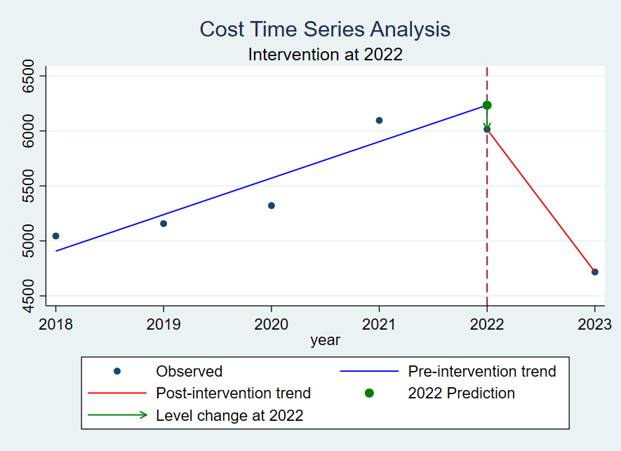
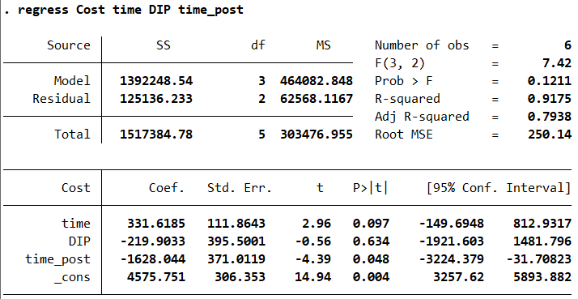

11-Stata 做 ITSA 分析
1 ITSA 分析
Interrupted Time Series Analysis (ITSA) 是一种常用的时间序列分析方法，用于评估某个干预措施对某个事件或趋势的影响。
1.1 STSA 公式
ITSA 模型的基本形式如下：
\[ Y_t = \beta_0 + \beta_1 \cdot T_t + \beta_2 \cdot X_t + \beta_3 \cdot T_t \cdot X_t + \epsilon_t \]
公式中各代码的含义分别为：
- \(Y_t\)：因变量，时间序列的观测值
- \(T_t\)：时间变量（序列），表示时间点 \(t\) 距离干预前的时间长度
- \(X_t\)：干预变量（哑变量），表示干预措施的状态，通常为 0 或 1
- \(\beta_0\)：截距，即常数项
- \(\beta_1\)：时间变量的系数，表示时间的趋势（改革前的变化趋势）
- \(\beta_2\)：干预变量的系数，表示干预的效应
- \(\beta_3\)：交互项系数，表示改革后与改革前斜率的差值，故改革后的斜率值为 \(\beta_1 + \beta_3\)
- \(\epsilon_t\)：误差项
1.2 数据集及来源
这里使用 Stata 中的 nlswork 数据集，该数据集包含了 1987 年和 1988 年的 个体数据。 首先找到 nlswork 数据集，你可以从互联网上寻找相关资源；或者从 Stata 的 nlswork 包中导出这一数据集，操作如下：
sysuse nlswork, clear
save "your-file-path\nlswork.dta", replace1.3 Stata 准备
1.3.1 安装对应的包
ssc install itsa
ssc install actest1.4 对次均住院费用进行分析
需要分析的变量很多，但是我们可以首先从次均住院费用开始，这是最直接的一组数据，根据 DIP政策 实施的时间点来划分时间段。
这里是2018-2023年六年的费用数据，我们首先对其按年进行处理，得到一个费用均数，实际上大多数论文都是按照月份进行处理，这样更合理也更详细一些，这里也可以按月份来，但是需要重新清洗数据，还是按照年份先试一下。
但是也有个问题就是，2022年开始DIP改革，数据只截止到2023，因此2022-2023无法进行回归，只能用截距代替一下（数据不稳定，谨慎对待）。
操作代码如下：
clear all
use "C:\Users\asus\ITSA\ITSA-PRE.dta", replace
// 按年份聚合数据，取平均值
collapse (mean) Cost, by(year)
// 设置时间变量
tsset year
// 定义时间变量和干预变量
gen time = year - 2017
gen DIP = (year >= 2022) // 2022年及以后为1，之前为0
gen time_post = (time - 5) * DIP // 干预后时间变量
// 计算政策前的趋势（2018-2021）
regress Cost time if year <= 2021
local beta0 = _b[_cons]
local beta1 = _b[time]
// 计算 2022 年的预测值
local cost_2022_pred = `beta0' + `beta1' * 5
gen Cost_pred_2022 = `cost_2022_pred' if year == 2022
// 计算政策前趋势线（2018-2022）
generate Cost_pred_2018_2022 = `beta0' + `beta1' * time if year <= 2022
// 计算 2022 和 2023 年的真实值
gen cost_2022_actual = Cost if year == 2022
gen cost_2023_actual = Cost if year == 2023
egen cost_2022_real = max(cost_2022_actual)
egen cost_2023_real = max(cost_2023_actual)
local cost_2022_actual = cost_2022_real
local cost_2023_actual = cost_2023_real
// 计算政策后趋势斜率
local beta_post_1 = (`cost_2023_actual' - `cost_2022_actual') / (6 - 5)
// 计算政策后趋势线（从 2022 真实值开始）
generate Cost_pred_post = `cost_2022_actual' + `beta_post_1' * (time - 5) if year >= 2022
// 显示关键信息
display "政策前趋势 β1: `beta1'"
display "2022 预测值: `cost_2022_pred'"
display "2022 真实值: `cost_2022_actual'"
display "2023 真实值: `cost_2023_actual'"
display "政策后斜率 β_post_1: `beta_post_1'"
// 画图
twoway (scatter Cost year, msize(small)) /// 观察值
(line Cost_pred_2018_2022 year if year <= 2022, lcolor(blue)) /// 政策前趋势
(line Cost_pred_post year if year >= 2022, lcolor(red)) /// 政策后趋势
(scatter Cost_pred_2022 year if year == 2022, mcolor(green) msize(medium)) /// 2022预测值
(pcarrow Cost_pred_2022 year Cost year if year == 2022, lcolor(green) mcolor(green)), ///
xline(2022, lpattern(dash)) ///
title("Cost Time Series Analysis") ///
subtitle("Intervention at 2022") ///
xlabel(2018(1)2023) ///
legend(label(1 "Observed") label(2 "Pre-intervention trend") ///
label(3 "Post-intervention trend") label(4 "2022 Prediction") label(5 "Level change at 2022"))
// 保存图形
graph save "C:\Users\asus\test\cost_time_series_graph.gph", replace
// 计算回归系数表
regress Cost time DIP time_post
outreg2 using "C:\Users\asus\test\itsa_results.doc", replace word这里用
2018年的数据作为起始数据（ITSA方程的截距，即 \(\beta_0\) ）；
2018-2021年的数据拟合政策前 次均费用 随时间变化的趋势，即 \(\beta_1\) ；
然后用 \(\beta_1\) 计算2022年的预测值(\(cost_{2022pred} = \beta_0 +\beta_1 * 5\) )；
2022年到2023年的数据直接使用真实值，得到政策后的趋势直线，如果数据足够多（≥3），则可以对政策后的数据进行回归得到 \(\beta_3\)；
使用2022年的真实值减去2022年的预测值，得到政策变化对 cost 造成的水平影响，即 \(\beta_2\) 。
1.5 绘制ITSA趋势图
上述代码运行后输出 中断时间序列分析 趋势图：

1.6 输出统计结果
代码的最后，做回归系数表，得到如下结果：

政策前的时间趋势为：\(\beta_1=331.6185\)；
政策实施时的瞬时变化为：\(\beta_2=-219.9033\);
政策实施后的变化趋势为：\(\beta_3=-1628.044\) 。
其他变量也就可以按照此种模式进行一一计算，当然也可以用循环的模式计算，以后再论。